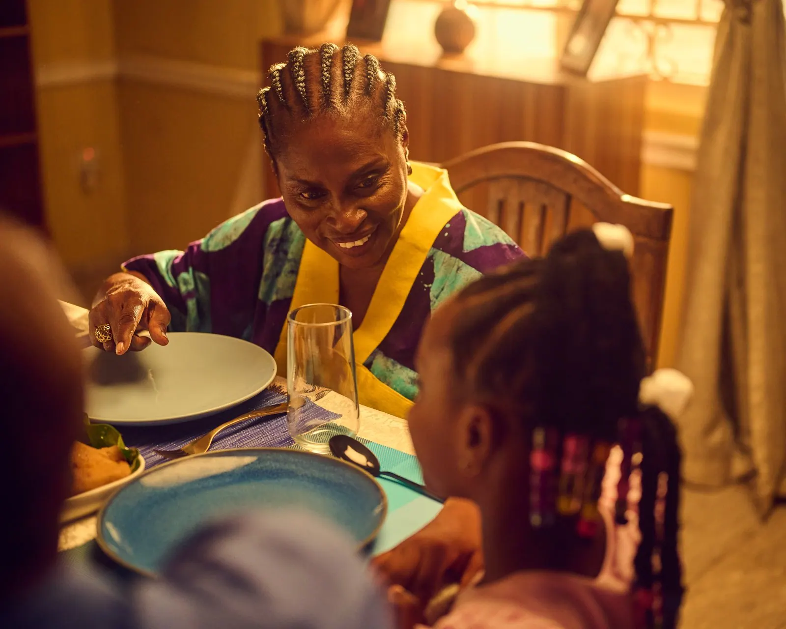
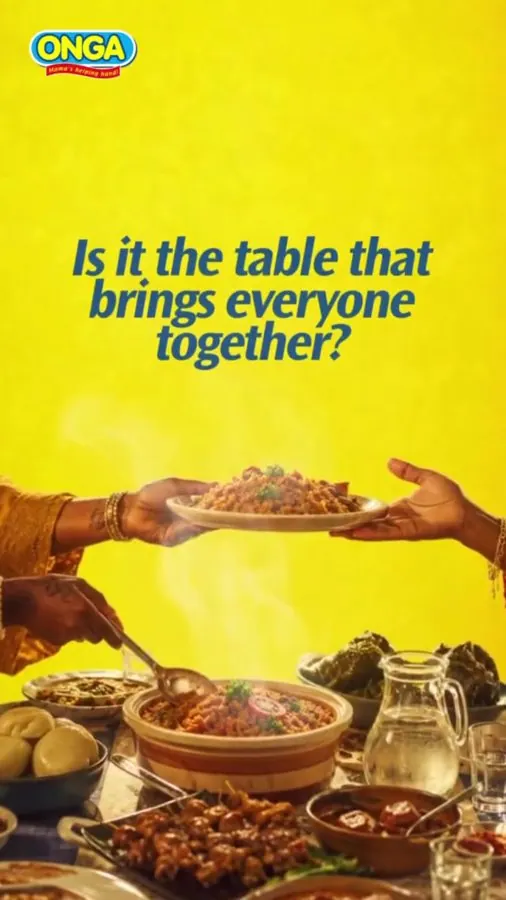
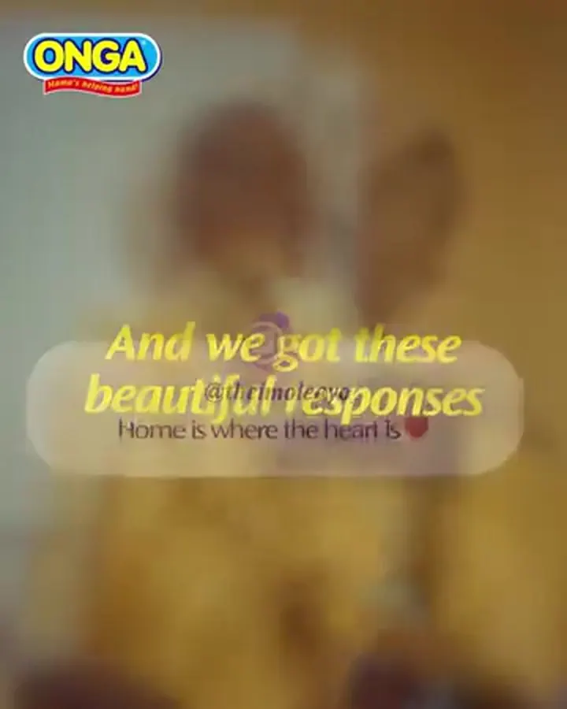
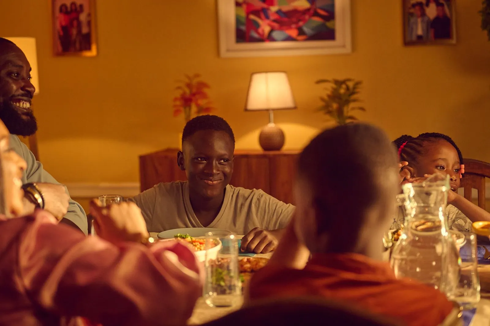
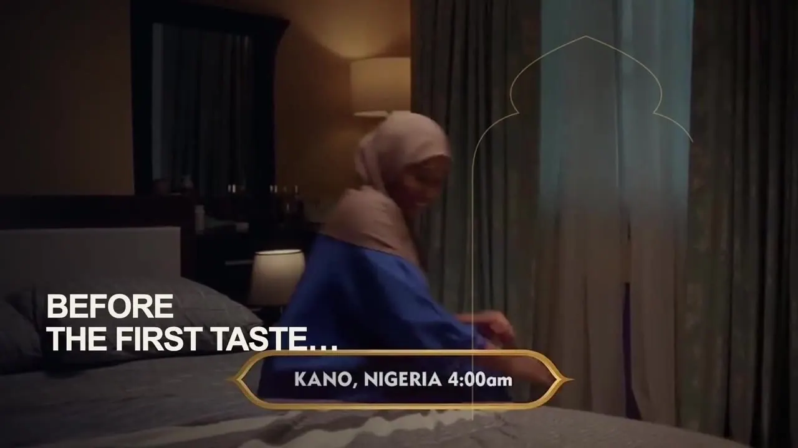

Onga · Promasidor Nigeria · 2026
Taste of Home
- The line
- Wherever the taste feels like yours, that's home.
- The Republic's role
- Digital strategy · Social content · Creator engagement · Campaign amplification
- Partners
- The Republic × Promasidor Nigeria. Film and talent credits under Credits.
- Platform
- Taste of Home predates 2026. The Republic built its digital platform.
01 · The problem
Onga's improved Beef and Chicken cubes needed renewed consideration after three years of share decline. The opportunity was bigger than a product announcement: reconnect the brand with the food, people and memories that make somewhere feel like home.
02 · The human truth
Home is wherever the taste feels like yours.
03 · The idea
Ask people what home means, then build the platform from their answers.
04 · The work
- The open question, asked in the feed: what does home mean to you?
- Selected answers returned to the feed, so people saw themselves in the campaign.
- Stan Nze's meal for Lolo.
- Food Creator Icon at AMVCA Cultural Day.
- Family films, Kitchen Court and World Jollof Day.



05 · Evidence
Instagram views and 1,470 follows from two July launch-film records. Lifetime post metrics, including repeat exposure.
Views across nine specified Jollof and creator-recipe records, recorded separately.
Lifetime YouTube views on the early English film, observed 7 September 2026.
Figures are platform counters, not unique people. Each carries its record, date and definition.
06 · Credits
- Client
- Promasidor Nigeria
- Brand
- Onga
- Digital strategy, social content, creator engagement, amplification
- The Republic

Next world
Cowbell · Your First Taste
Before the first taste, someone cared.
OFFICE@THEREPUBLIC.AGENCY
10 ONISIWO ROAD, IKOYI, LAGOS